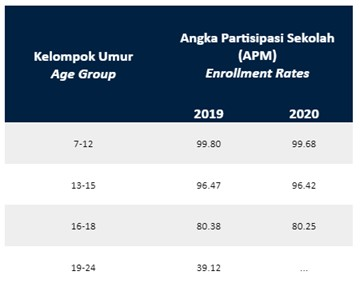

Angka Partisipasi Sekolah
(Data diperoleh dari BPS)
Jika dilihat dari tabel di atas, angka partisipasi sekolah untuk kelompok umur 19-24 hanya sebesar 39%, yang artinya tak banyak orang yang melanjutkan pendidikan ke Perguruan Tinggi.
Website ini berisi tentang peta persebaran Perguruan Tinggi baik Negeri maupun Swasta di Kota Bandung. Dengan adanya website ini, diharapkan dapat bermanfaat bagi mahasiswa maupun calon mahasiswa yang akan menentukan langkah untuk mencapai cita - cita nya.
Terdiri dari 14 Perguruan Tinggi yang tersebar di Kota Bandung, disajikan dengan visual menarik dan informatif dalam bentuk grafik.